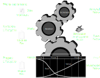

Essence
Essence
Ausgangspunkt
„With every major paradigm shift [...] industry throws out all they know about software development and start all over with new terminology with little relation to the old one.”
Essence
- OMG-Standard
- Essence Kernel beinhaltet Elemente, die allen Softwareprojekten gemeinsam sind
- Aufteilung in
- customer (Kunde)
- solution (Lösung)
- endeavor (Unterfangen)
Modelle zur Softwareentwicklung
Plangetrieben vs. agil
Plangetrieben
- Aktivitäten werden vorgeplant
- Fortschritt wird gegen den Plan gemessen
Agil
- Planung geschieht inkrementell
- Leichtere Prozessänderung bei Anforderungsänderungen
- Schwierigere Kostenkalkulation
Drei Modellklassen
Sequentiell
- Plangetrieben
- Getrennte, aufeinanderfolgende Projektphasen
Inkrementell
- Plangetrieben oder agil
- Spezifikation / Entwicklung / Validierung verzahnt
Wiederverwendungsorientiert
- Plangetrieben oder agil
- Fertige Komponenten
Eigenschaften inkrementeller Entwicklung
- Produkt wird in Teilprodukte aufgeteilt
- Dies kann horizontal oder vertikal geschehen
Horizontale Aufteilung
Eine Schicht wird komplett entwickelt (z.B. UI oder Datenschicht)
Vertikale Aufteilung
Funktionsteile werden komplett entwickelt (Durchstich durch Schichten)
Vorteile
- Änderungen leichter umsetzbar
- Direkteres Kundenfeedback
- Schnellere Teillieferungen
Nachteile
- Fehlende Gesamtübersicht
- Systemstruktur kann degradieren
Lebenszyklus
Alphas

Praktiken
Übersicht

Team Essentials
- Teammanagement und Arbeitsatmosphäre
- Bestmöglicher den Fähigkeiten entsprechender Einsatz
- Kollaborative Mitarbeit
Rollen
- Analyst
- Architekt
- Entwickler
- Projektmanager
- Tester
- Designer
- Prozessingenieur
Common Ownership
- Gemeinsame Verantwortung
Lifecycle Essentials

Iterative Essentials
Ziele
- Reduktion von Risiko und Kosten
- Adäquater Umgang mit wechselnden Anforderungen und Bedingungen
- Hohe Produktivität und Effektivität
Mittel
- Frühe auslieferungsfähige Softwarestände
- Inkrementelle Weiterentwicklung
- Frühe und enge Einbindung der Stakeholder
Product Essentials
- Richtiger Zuschnitt
- Richtige Auslieferung von Softwareprodukten und -weiterentwicklungen